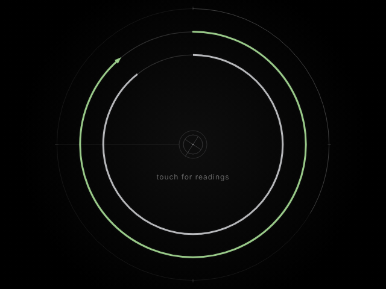

Soluna
a timepiece

An astronomical timepiece. Rather than hours and minutes, it reads time through solar noon, the phase of the moon and the turning of the seasons, set to where you are.
Touch the dial for readings: your place in the solar day from noon to noon, the moon's current phase and illumination, and the next equinox or solstice.
Browser
Open SolunaRuns in any modern browser. Add it to your home screen to keep it close; it works offline once opened.
Notes
Soluna asks for your location to set the dial to your longitude. It stays on your device. Without it, Soluna estimates your longitude from your time zone.
Soluna is freeware.